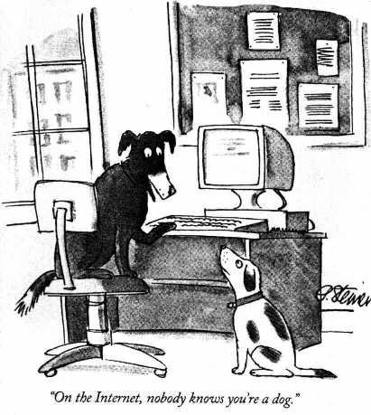

I thought I’d take a slight detour. In the last installment, I highlighted an enormous opportunity for improvement in science-based messaging, particularly when discussing global warming. Current messaging focuses on climate change (the problem) and decarbonization (the historical cause) rather than practical approaches to climate control (the desired outcome). Based on psychological precepts, focusing on the problem unintentionally worsens the situation by prompting counterproductive apathy (via learned helplessness) rather than action.
If you’re scientifically inclined, I recommend you become more active on social media, no matter how small your audience. While that may be uncomfortable for many introverts (such as myself), the point isn’t to teach others to think like scientists (Lord knows I‘ve tried) but to message about the size of the problem and the amount of effort required to control our atmosphere. While “Think Global, Act Local” may be an excellent slogan for some crunchy grassroots efforts, that won’t cut it for climate control—diffuse, value-signaling actions by enlightened individuals won’t work for reasons I’ve already covered.
A bit of history: When I started, I raised the concept of Healing with a few close colleagues. Across the board, they said, “Why would you open yourself up like that?” They believed I would sacrifice personal privacy and attract trolls simply by taking a public, moral stance on a potentially controversial topic. The general view about climate science was that it had been covered in detail by ‘experts’, who were, at the time, being criticized incessantly by non-scientists. My colleagues’ implicit warning was, “Let others take the heat.” I experimented anyway.
While I got a few confrontational messages early on, expressing myself online hasn’t been an ongoing issue. I suppose my name is sufficiently low on the doxxing or cancel-culture radar that I haven’t gotten any credible threats. But I understand the concern: Associating your name with anything posted on the public Internet is dangerous, in theory, because it opens you up to cruel, personal attacks from people you don’t know and people who don’t know you.
So, for today, consider this: Participating in civil society requires losing personal privacy. Since the beginning of civilization, your neighbors have always known what you look like and where you live. At the same time, we all prefer to keep our more embarrassing personal facts private, away from the prying eyes of neighbors. But, as humans, most of us also find others’ uncomfortable personal facts interesting, if only to support gossip and to normalize our peculiarities.
But, during my lifetime, the balance of power has shifted. Participating in society feels more dangerous today because low barriers to information have made social relationships increasingly asymmetrical. This is evident in our partisan divide. Using myself as an example:
-
You know who I am, and particularly given my uncommon name, you can uncover many personal facts if you poke around on the Internet, even without the services of a skilled private investigator.
-
But I do not know who you are, particularly if you’re not a “subscriber”.
For more well-known individuals than I, personal information has more intrinsic value (for a few examples, see the British Royal Family or ElonJet ). On the other hand, if you’re not among the rich or famous, the Internet makes it far too profitable to hide your true identity (see catfishing ). Consider this 30-year-old meme:

Nobody knows if you’re a dog, indeed. But, more significantly, it’s hard to establish if you’re a Russian hacker, a bot, or “somebody sitting on their bed that weighs 400 pounds. 1 ” Consequently, the lack of comprehensive identity verification on the Internet gives foreign entities or domestic malcontents carte blanche to rig our social network. That’s just not right.
What are our institutions doing about it? Misplaced privacy concerns have led fretful governments to enact privacy-oriented regulations like HIPAA 2 and GDPR 3 . Such laws “protect” privacy in some form or another in the context of Virtue Signaling to voters ( viz., the last issue) 4 .
By focusing on protecting privacy rather than proving identity, governments have offloaded the responsibility for data integrity to precisely the wrong group: Tech companies.
On the one hand (assuming you’re about as careful as most folks are about browsing), tech knows more about your eccentric habits than even the nosy neighbor. On the other, legislated “privacy” means that tech companies can point to regulations for why they can’t share any information about their account holders.
This landscape has two problems: First, because the Internet doesn’t stop at the border, this system encourages foreign nationals to pose as American citizens. Our laws protect these cyber-illegal immigrants but are not subject to them. Second, because tech company valuations are correlated to the number of ‘users’, tech companies have no incentive to remove fake accounts (whose identities are ‘protected’) 5 .
I want to make a simple suggestion:
Legislate full internet identity transparency .
This will make the playing field more, not less, level. It’s no different than issuing driver’s licenses or passports, functions that most of us expect of governments already. The idea is this: To get credentials to use any web platform, your identity (including citizenship, age, etc.) must be known and knowable to all. While that may make you uncomfortable, isn’t it better that the government curates that information than a commercial enterprise wanting to monetize it? And if it’s expected of every user, then, like sunlight, it’ll turn trolls to stone 6 . While stalkers can still stalk, they can only do so in public view, which has (at least historically) been very effective at control.
Anonymous death threats against public figures are already commonplace. Privacy protections make identifying the threatener (who is, by the way, engaged in an illegal act) far too challenging. Does it make sense for civilized societies to make it more difficult for police to find and arrest criminals? Yet, that’s what the knee-jerk privacy lobby recommends. If you have an iPhone, you already know that facial recognition is a solved problem, so anonymity and privacy are fictional constructs.
There’s a lot that humans can improve with the world, and an alternative explanation for our current troubles (vs. climate change) is that social media is at its core. The monetization of social influence continues to drive an integrity crisis both on the Left and on the Right.
In the September 2016 Presidential debate between Donald Trump and Hillary Clinton, Trump said (about leaked e-mails), “I mean, it could be Russia, but it could also be China. It could also be lots of other people. It also could be somebody sitting on their bed that weighs 400 pounds, OK? You don’t know who broke into the DNC.” In this case, documents from the 2018 Mueller Investigation pointed the finger squarely at Russia, so Hillary was proven correct two years too late. It didn’t matter because there was no easy way to trace the hackers, partly because of privacy laws.
The Health Insurance Portability and Accountability Act. It prevents you from standing behind the previous customer when picking up your prescription.
The EU Generalized Data Protection Regulation. This far-reaching regulation is why you can selectively prevent certain “cookies” from being installed on your computer.
This was Elon Musk’s main concern with his most recent (and stupidest) use of capital: See rand.org
Well, at least some of them. See en.wikipedia.org .